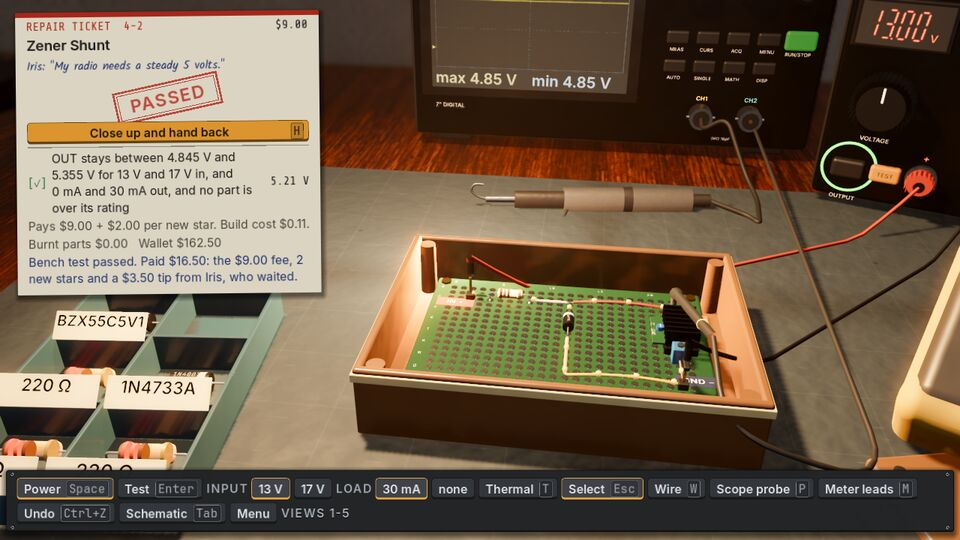
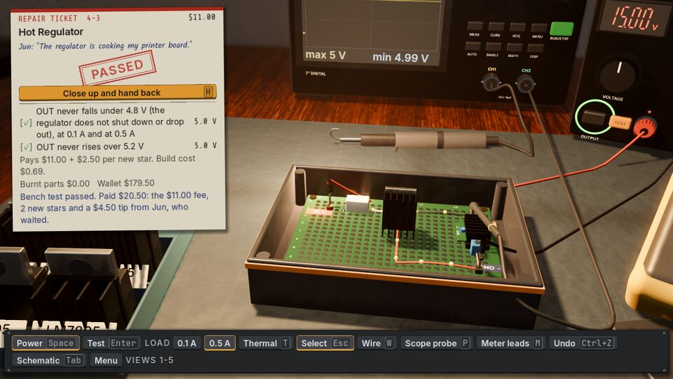
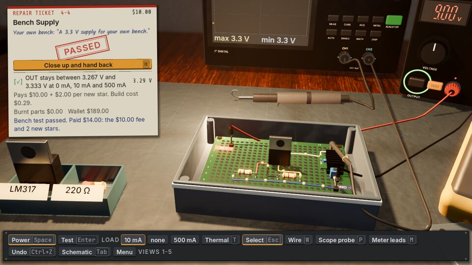
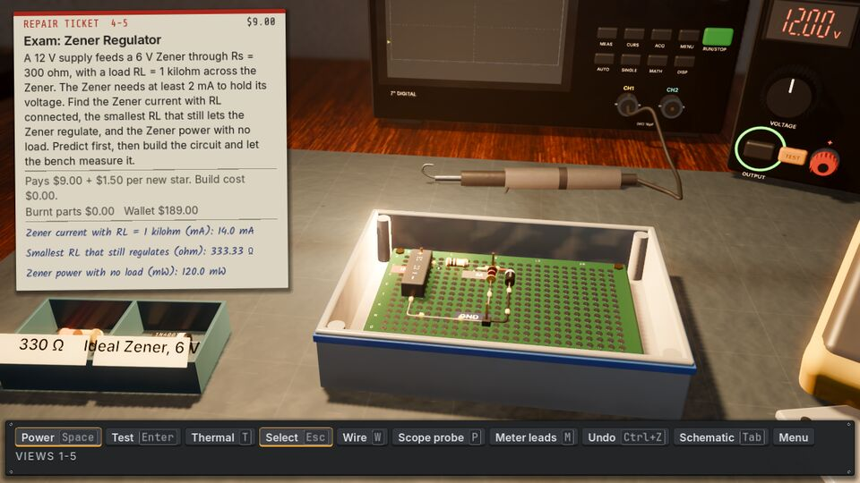

Wiki / Chapter 4
Chapter 4 · Mains & Rectifiers
Wren's fourth page: five jobs at Stall 14, Lantern Lane, with rain on the awnings. Rebuild a wall-wart's rectifier on the safe side of a simulated, isolated mains, hold a radio's rail with a Zener, keep a regulator cool, set an LM317 to 3.3 V, then sit the Zener exam.
4-1 · Wall Wart

Mrs. Dale's wall adapter hums and the radio on it crackles. It is a 12 V adapter: a transformer steps the mains down to 12 V rms, and you rebuild what comes after it: a diode bridge and a smoothing capacitor. OUT must average at least 12.0 V with at most 1.0 V of ripple (peak to peak) while it feeds 100 mA, and it has to do that when the mains sags 10 % (207 V) and when it runs 10 % high (253 V). With no load at all the capacitor must stay inside its voltage rating. Wren: rms is the heating value; the peak is 1.41 times that, and a capacitor charges to the peak.
On the bench: The transformer is soldered in; its mains side sits in the red square. Build the bridge and the capacitor on the 12 V side.
The bench checks
- The ripple on OUT is at most 1.0 V peak to peak at 100 mA, for mains of 207, 230 and 253 V
- OUT averages at least 12.0 V at 100 mA, for mains of 207, 230 and 253 V
Parts tray: 1N4007 rectifier diode, 1N4148 signal diode, Electrolytic capacitor, Carbon-film resistor 5 %
4-2 · Zener Shunt

Iris's radio needs a steady 5.1 V rail but only gets an unregulated 13 to 17 V. Put a resistor from IN to OUT and a Zener from OUT to GND (the cathode, the banded end, on OUT). OUT must stay within 5.1 V give or take 5 % for an input of 13 V and of 17 V, with the radio drawing anything from 0 to 30 mA. Wren: size the resistor for the worst case at each end: lowest input with highest load, and highest input with no load.
On the bench: IN to OUT is empty. A resistor from IN to OUT and a Zener from OUT to GND, banded end on OUT.
The bench checks
- OUT stays between 4.845 V and 5.355 V for 13 V and 17 V in, and 0 mA and 30 mA out, and no part is over its rating
Parts tray: Carbon-film resistor 5 %, 1N4733A Zener 5.1 V, BZX55C5V1 Zener 5.1 V
4-3 · Hot Regulator

Jun's 3D-printer controller needs 5.00 V (give or take 4 %) at 0.1 to 0.5 A from a 15 V rail, inside a printer that sits at 40 degrees. A linear regulator turns every volt it drops into heat, P = (Vin - Vout) x I, and its chip must stay at 125 degrees or less. You can clip a heatsink on the chip (25, 15 or 8 degrees per watt) and put a power resistor ahead of it to take part of the drop. Wren: the chip shuts itself off at 150 degrees and comes back at 135, which looks like OUT blinking. The thermal camera (press T) shows where the watts go.
On the bench: The regulator goes between IN and OUT. Switch on the thermal camera (T) and watch it heat before you choose a heatsink.
The bench checks
- OUT never falls under 4.8 V (the regulator does not shut down or drop out), at 0.1 A and at 0.5 A
- OUT never rises over 5.2 V
Parts tray: LM7805 regulator, 5 V, 5 W wirewound resistor
4-4 · Bench Supply

Your own bench wants a 3.3 V supply from the 9 V rail with an LM317. Two resistors set the voltage: R1 from OUT to the ADJ pin, R2 from ADJ to GND. The chip keeps 1.25 V across R1, so Vout = 1.25 x (1 + R2 / R1) + Iadj x R2, with Iadj about 50 microamps. OUT must be 3.30 V, give or take 1 %, at no load, at 10 mA and at 500 mA. Wren: the LM317 also wants a few milliamps of minimum load, which is why the datasheet says R1 = 240 ohm.
On the bench: Your own board. An LM317, two resistors, and 3.30 V on OUT at every load.
The bench checks
- OUT stays between 3.267 V and 3.333 V at 0 mA, 10 mA and 500 mA
Parts tray: LM317 adjustable regulator, Carbon-film resistor 5 %
4-5 · Exam: Zener Regulator exam

A 12 V supply feeds a 6 V Zener through Rs = 300 ohm, with a load RL = 1 kilohm across the Zener. The Zener needs at least 2 mA to hold its voltage. Find the Zener current with RL connected, the smallest RL that still lets the Zener regulate, and the Zener power with no load. Predict first, then build the circuit and let the bench measure it.
On the bench: Predict first, then build and probe.
The bench checks
- Zener current with RL = 1 kilohm (mA)
- Smallest RL that still regulates (ohm)
- Zener power with no load (mW)
- The current through Rs is 20 mA, give or take 1 % (Rs = 300 ohm and the Zener is holding 6 V)
Parts tray: Exact resistor, Ideal Zener, 6 V